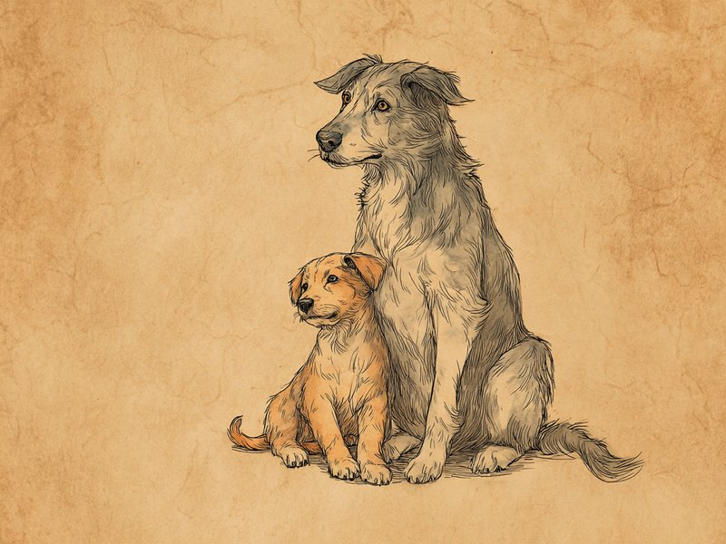

「シニア」の始まりは、体格によって数年も違います。見逃しやすい初期サインも合わせて紹介します。 When does "senior" actually begin? It depends a lot on size — here are the early signs to watch for.
犬のシニア期の始まりは体格によって数年の差があり(小型犬10歳前後〜超大型犬5〜6歳頃)、猫は7歳前後が最初の目安。白髪や動きの変化など5つのサインに気づいたら、早めに健康診断を受けましょう。
🔍 ちょっと寄り道:動物の行動には理由があるように、人の性格にも傾向があります。気になった方は性格診断(MBTI)も覗いてみてください。
犬のシニア期は、体の大きさで数年変わる
犬がシニア期に入る年齢は、小型犬の10歳前後から超大型犬の5〜6歳頃まで、体格によって数年の幅があると言われています。これは体格によって老化のペースが大きく異なるためです。目安としては、小型犬は10歳前後、中型犬は8〜9歳前後、大型犬は7歳前後、超大型犬では5〜6歳頃からシニア期に差しかかると言われています。この体格別の目安は、米国動物病院協会(AAHA)が2023年に公表した「シニアケアガイドライン(2023 AAHA Senior Care Guidelines for Dogs and Cats)」でも示されている考え方で、体格が大きいほど生涯の中でシニア期を迎えるタイミングが早いとされています。本サイトの年齢換算ツールで大型犬・超大型犬の年間加算値を小型犬より大きく設定しているのも、この「大きいほど早く年をとる」傾向を反映したものです。
出典: "2023 AAHA Senior Care Guidelines for Dogs and Cats" American Animal Hospital Association, 2023. aaha.org
- 小型犬:10歳前後からシニア期に
- 中型犬:8〜9歳前後からシニア期に
- 大型犬:7歳前後からシニア期に
- 超大型犬:5〜6歳頃からシニア期に
猫のシニア期は、7歳が最初の目安
猫の場合、シニア期の最初の目安は7歳前後で、犬のように体格ごとに大きく変わることはないとされています。さらに11歳を過ぎると「高齢期(geriatric)」と呼ばれる段階に入るとされています。ただし猫は不調を隠すのが上手な動物としても知られており、見た目の変化が現れる頃には症状がある程度進んでいることも珍しくありません。
見逃しやすい、5つの「はじまりのサイン」
白髪の増加、動きのペース低下、反応の遅れ、睡眠時間の増加、口臭・歯石の5つが、シニア期の始まりによく見られるサインです。年齢の数字だけでなく、次のような日々のちょっとした変化にも目を向けてみましょう。
- 口周りや被毛に白髪が増える — 特にマズル(鼻先)周りは早い段階で白くなりやすい部分です。
- 散歩や階段でペースが落ちる — 関節や筋力の変化により、以前より慎重な動き方になることがあります。
- 物音や呼びかけへの反応が少し遅くなる — 聴力の変化は緩やかに進むため、飼い主が気づきにくい変化のひとつです。
- 睡眠時間が増える — 若い頃より寝ている時間が長くなるのは、加齢に伴うごく一般的な変化です。
- 口臭や歯石が気になり始める — 歯周病はシニア期の犬猫に多く見られ、全身の健康にも影響することがあります。
サインに気づいたら、まずは健康診断を
結論はシンプルで、気になるサインがあれば早めに獣医師の健康診断で確かめておくのが安心です。これらのサインはあくまで一般的な傾向であり、個体差も大きいものです。当てはまる項目があっても慌てる必要はありませんが、「年のせいかな」と自己判断で済ませず、定期的な健康診断で獣医師に相談することをおすすめします。早めに気づくことで、快適なシニアライフをサポートできる選択肢も広がります。
シニア期に入ると、若い頃と同じ量のごはんでも体重が増えやすくなることがあります。運動量の低下に加えて基礎代謝も緩やかに落ちていくためで、食事量やフードの種類を見直すきっかけとして「シニア期の入り口」を意識するのも一つの方法です。
ミニクイズ:犬がシニア期に入る年齢は、どの犬種もだいたい同じ?(タップして答えを見る)
こたえ×。体格によって数年の差があり、目安は小型犬が10歳前後、中型犬が8〜9歳前後、大型犬が7歳前後、超大型犬では5〜6歳頃からとされています。